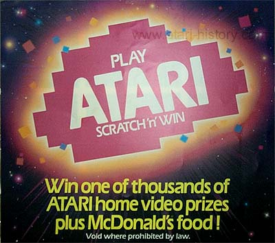
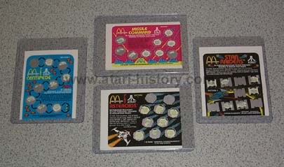
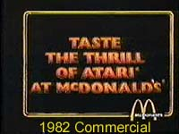
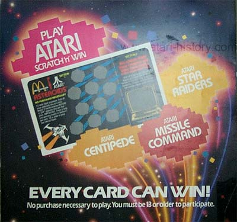

In 1982, the world's largest home videogame manufacturer teamed up with
the world's largest restaurant chain to let folks "Taste the Thrill of
Atari at McDonald's" with a spectacular nationwide contest.
From August 15 to October 15, Mcdonald's gave away over 12,000 Atari prizes
- video game consoles, and home computers worth over $4 million - plus
additional prizes of McDonald's food and drinks.
Participating McDonald's restaurants distributed free game pieces with
the purchase of large sandwiches or specialty items from their menu.
Each game piece was based on an Atari video game - Asteroids, Centipede,
Missle Command, or Star Raiders - and had a series of rub-off spots.
If you matched food or Atari game prizes without uncovering a "Zap" spot,
you won.
Prizes
included approximately 10,000 Atari Video Computer consoles, 1,500 Atari
400 and 800 Home Computers, and 200 full-sized Cabaret model Centipede
coin video games. For the grand prize, 50 deluxe home video
packages were given away, each of which included an Atari 5200 Advanced
Video Entertainment System and cartridges, an Atari 800 Home Computer with
a complete package of accessories, the tabletop Centipede coin video game,
and a big-screen television.


Click
here to view the 1982
McDonalds
"Thrill of Atari"
Commercial

Thanks to McDonald's and Atari, the old fashion Dinner
was replaced by an exciting Video Dinner
that
made thousands winners in the Summer-Fall
of 1982.